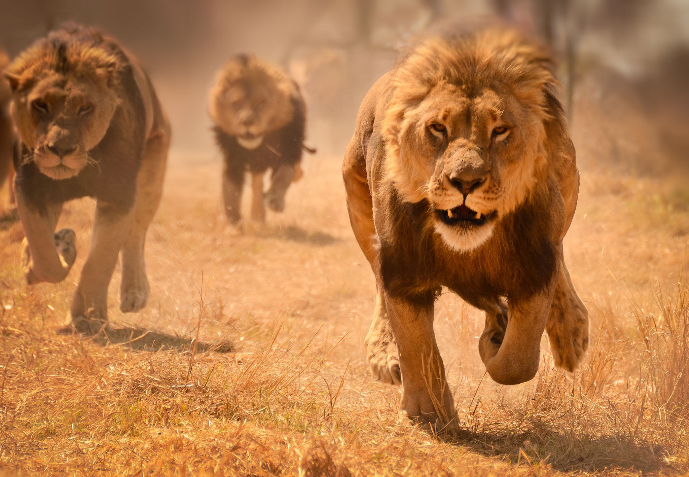

Leones
Los leones son los únicos felinos que viven en manada. Las unidades familiares pueden incluir hasta tres machos, una docena de hembras y sus crías. Todas las leonas de una manada están emparentadas y usualmente los pequeñas hembras en su seno se quedan con el grupo a medida que envejecen. Los varones jóvenes, sin embargo, tarde o temprano abandonan el grupo o son expulsados y establecen su propia manada.
Tipos de leones
- Leon de Katanga
- Leon del Congo
- Leon Transversal
- Leon del Atlas
Caracteristicas:
- Cola larga
- Pelaje Corto
- Carnivoras
Habitats del Leon
- Sabana
- zonas de transición entre bosques tropófilos y estepas
- llanuras herbáceas
- ecosistemas donde predomina la vegetación herbácea
Especies de leones
- el león africano
- os leones africanos se encuentran en el África subsahariana y se cree que quedan menos de 30.000 en estado silvestre.
- el leon asiatico
- La población de leones asiáticos es muy pequeña
